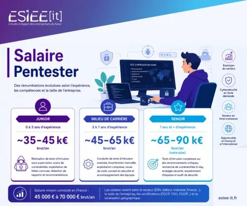

Un pentester (ou testeur d'intrusion) est un expert en cybersécurité qui simule des attaques informatiques légales pour identifier les vulnérabilités des systèmes, réseaux ou applications d'une entreprise. Ce rôle, souvent qualifié de hacker éthique, consiste à se mettre à la place d'un attaquant malveillant afin d'évaluer la robustesse des défenses et de proposer des correctifs pour renforcer la sécurité.
 |